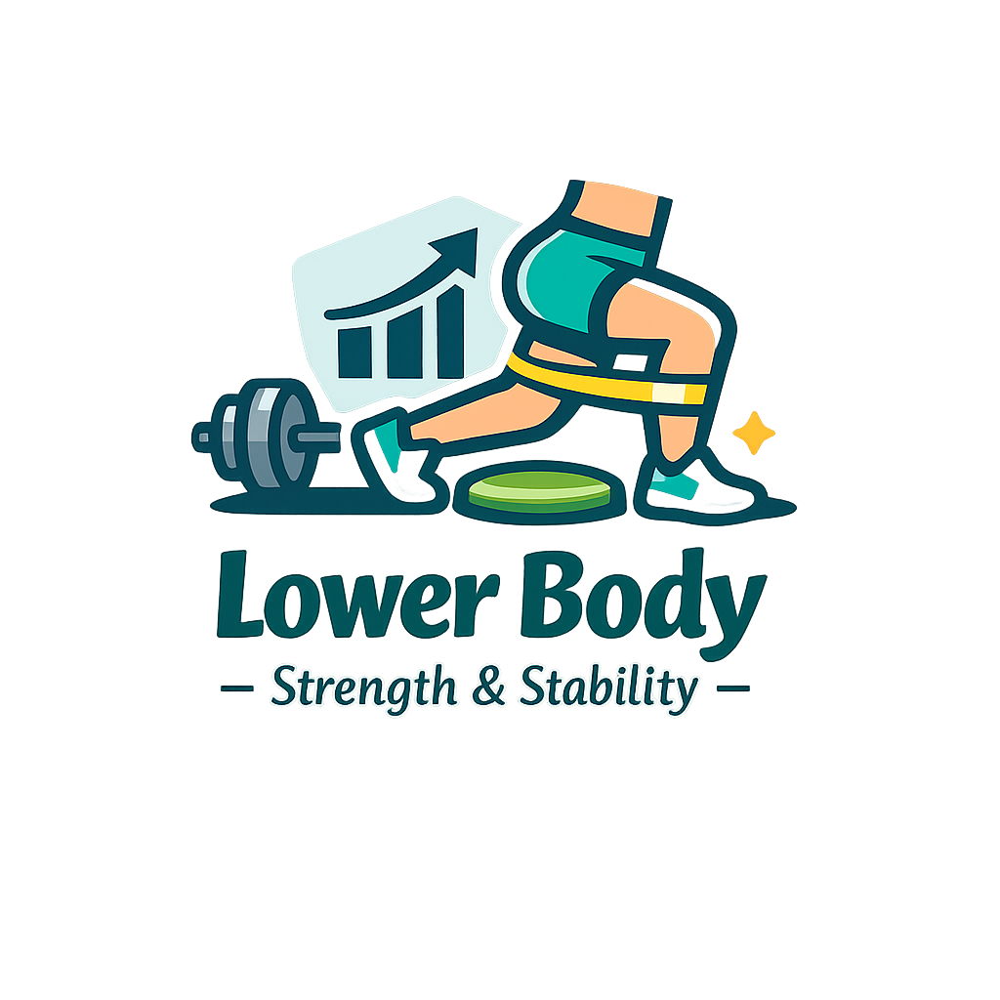
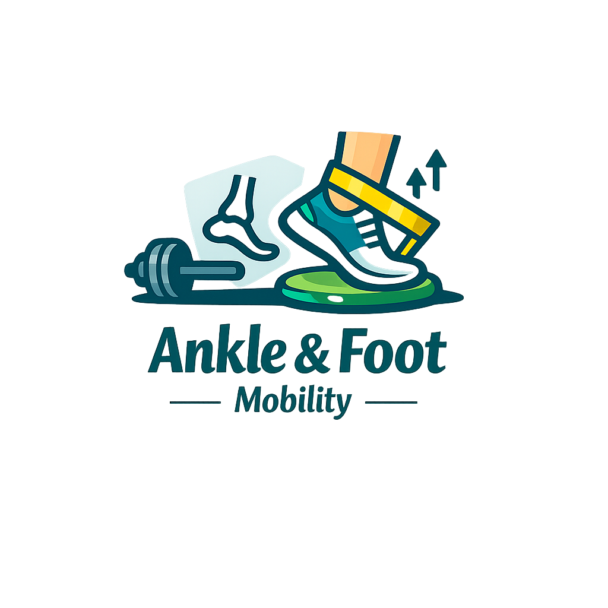
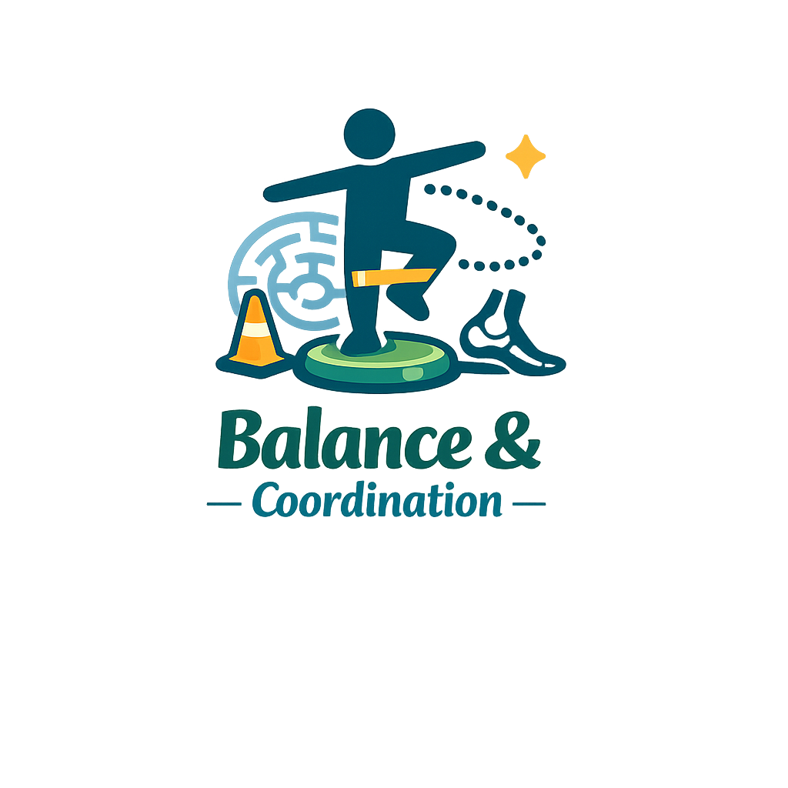
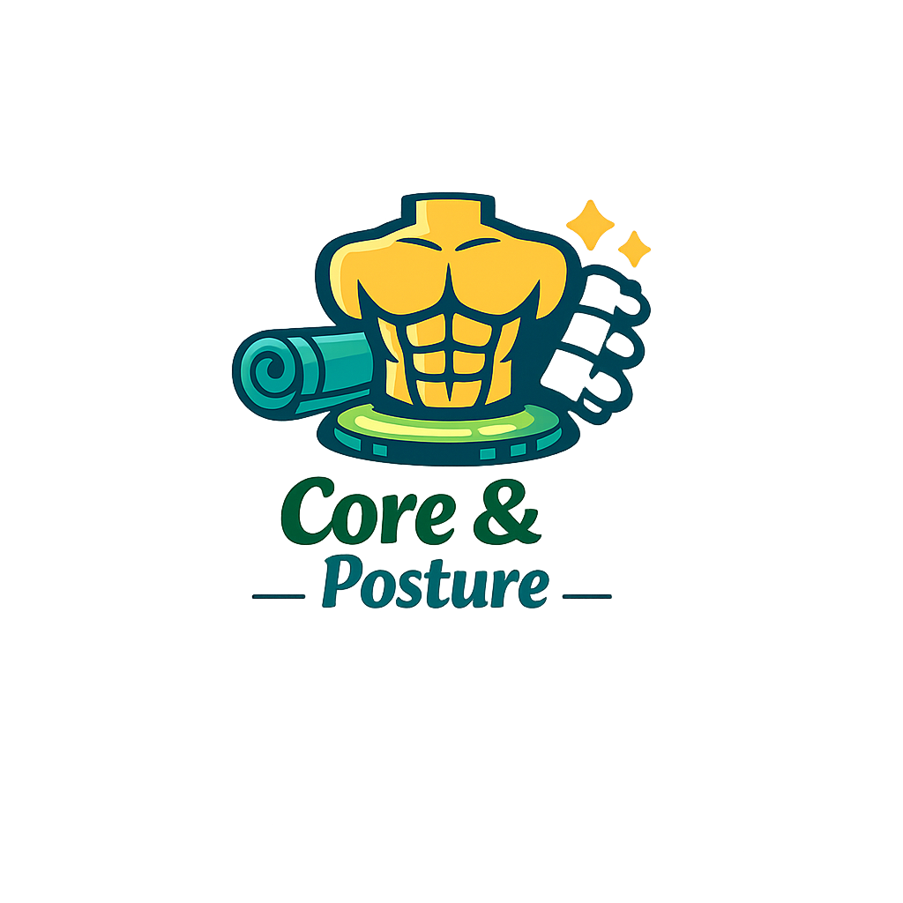
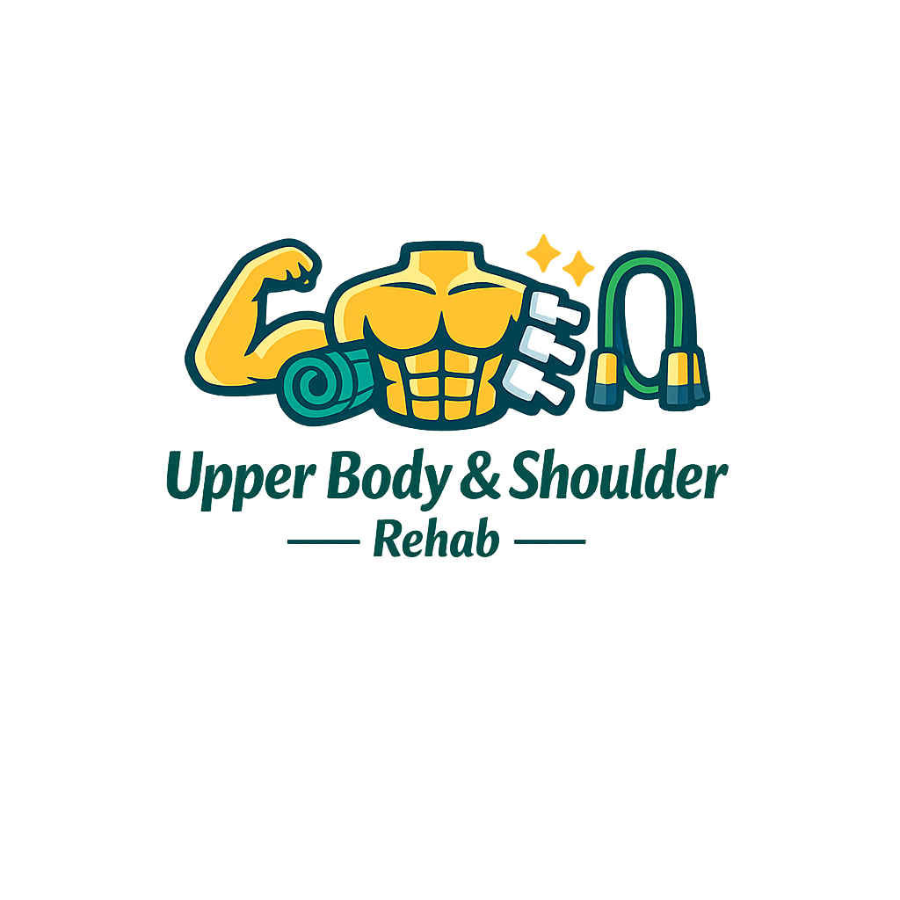
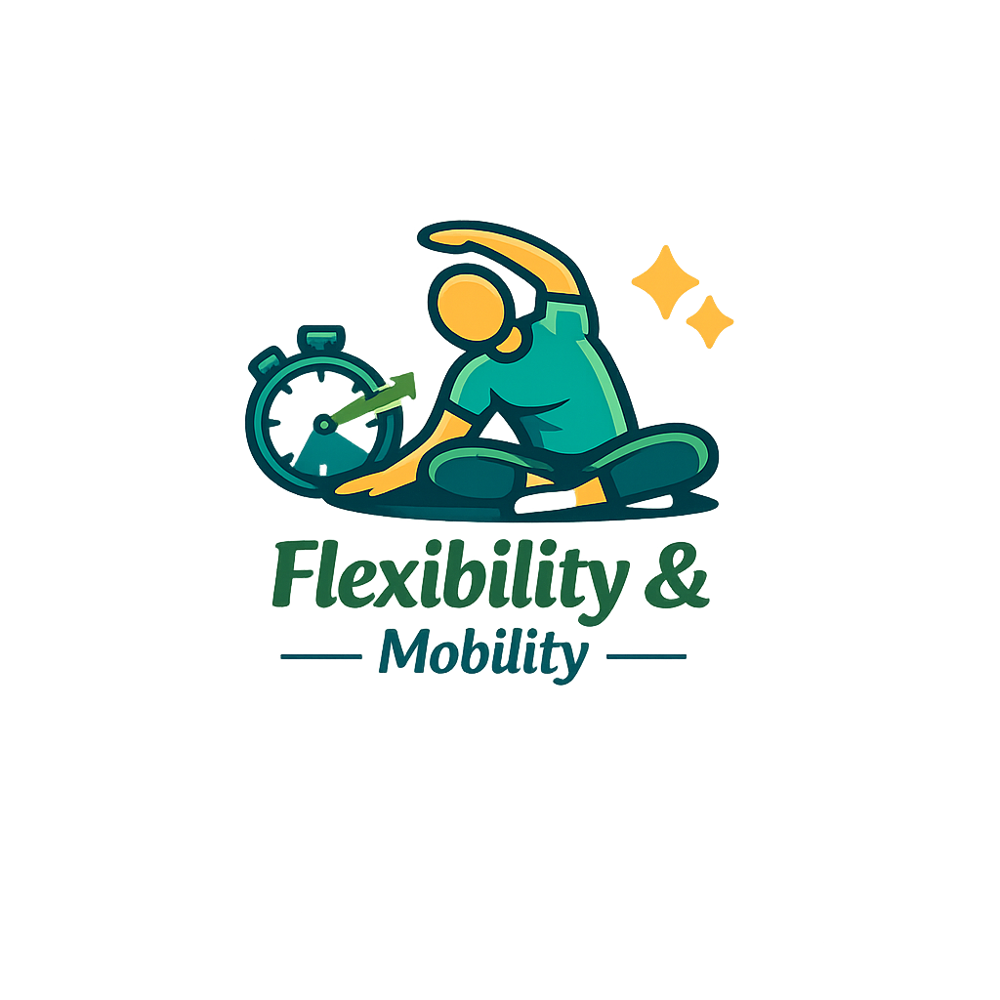

Exercises Included:
-
Purpose: Strengthens the quadriceps without bending the knee.
Recommended Reps: 10–15 reps per leg, 2–3 sets
Steps:
- Lie on your back with one knee bent and the other leg straight.
- Tighten the thigh muscle of the straight leg.
- Lift the straight leg to the height of the bent knee.
- Lower slowly with control.
-
Purpose: Strengthens the glute medius and hip abductors.
Recommended Reps: 12–15 reps per side, 2–3 sets
Steps:
- Lie on your side with knees bent and feet together.
- Keep your hips stacked and core engaged.
- Lift your top knee while keeping your feet touching.
- Lower slowly without rolling your hips backward.
-
Purpose: Strengthens glutes and improves pelvic stability.
Recommended Reps: 10–15 reps, 2–3 sets
Steps:
- Lie on your back with knees bent and feet flat.
- Squeeze your glutes and lift your hips upward.
- Hold for 2–3 seconds at the top.
- Lower slowly back to the floor.
-
Purpose: Improves knee mobility and gently activates hamstrings.
Recommended Reps: 10–15 reps, 2–3 sets
Steps:
- Lie on your back with legs extended.
- Slide one heel toward your glutes as far as comfortable.
- Pause briefly, then slide the heel back out.
- Repeat with control.
-
Purpose: Strengthens quads and glutes with low joint stress.
Recommended Reps: 10–15 reps, 2–3 sets
Steps:
- Stand with feet hip-width apart.
- Bend your knees slightly into a quarter squat.
- Keep your chest lifted and weight in your heels.
- Return to standing with control.

Exercises Included:
-
Purpose: Improves ankle mobility and control.
Recommended Reps: 1–2 rounds of the alphabet
Steps:
- Sit comfortably with your leg extended.
- Lift your foot slightly off the ground.
- Use your toes to “draw” the alphabet in the air.
-
Purpose: Strengthens calves and improves ankle stability.
Recommended Reps: 10–15 reps, 2–3 sets
Steps:
- Stand tall with feet hip-width apart.
- Lift your heels off the ground.
- Pause briefly at the top.
- Lower slowly with control.
-
Purpose: Strengthens the small muscles of the foot.
Recommended Reps: 10–15 scrunches, 2–3 sets
Steps:
- Place a towel on the floor in front of you.
- Use your toes to pull the towel toward you.
- Reset and repeat.

Exercises Included:
-
Purpose: Improves balance and ankle stability.
Recommended Reps: Hold 20–30 seconds per leg, 2–3 rounds
Steps:
- Stand tall and lift one foot off the ground.
- Keep hips level and core engaged.
- Hold steady without wobbling.
-
Purpose: Improves balance and gait control.
Recommended Reps: 10–20 steps, 2–3 rounds
Steps:
- Walk forward placing one foot directly in front of the other.
- Keep your steps slow and controlled.
- Use a wall for support if needed.

Exercises Included:
-
Purpose: Activates deep core muscles and improves lumbar mobility.
Recommended Reps: 10–15 reps, 2–3 sets
Steps:
- Lie on your back with knees bent.
- Flatten your lower back into the floor by tilting your pelvis.
- Hold briefly, then release.
-
Purpose: Strengthens core and back stabilizers.
Recommended Reps: 10 reps per side, 2–3 sets
Steps:
- Start on hands and knees.
- Extend opposite arm and leg.
- Keep hips level and core tight.
- Return and switch sides.
-
Purpose: Builds deep core control and coordination.
Recommended Reps: 10–12 reps per side, 2–3 sets
Steps:
- Lie on your back with arms up and knees at 90°.
- Lower opposite arm and leg toward the floor.
- Return to the starting position.
- Switch sides.

Exercises Included:
-
Purpose: Improves posture and shoulder mobility.
Recommended Reps: 10–12 reps, 2–3 sets
Steps:
- Stand with your back against a wall.
- Place arms in a “W” shape.
- Slide arms upward into a “Y” shape.
- Return to the starting position.
-
Purpose: Strengthens upper back and shoulder stabilizers.
Recommended Reps: 10–15 reps, 2–3 sets
Steps:
- Sit or stand tall.
- Gently squeeze your shoulder blades together.
- Hold briefly, then release.
-
Purpose: Strengthens the rotator cuff.
Recommended Reps: 10–15 reps per arm, 2–3 sets
Steps:
- Hold a resistance band with elbow bent at 90°.
- Rotate your forearm outward away from your body.
- Return slowly to the starting position.
-
Purpose: Provides gentle shoulder mobility.
Recommended Reps: 20–30 seconds each direction
Steps:
- Lean forward and let your arm hang.
- Gently swing your arm in circles.
- Switch directions.

Exercises Included:
-
Purpose: Improves hamstring flexibility.
Recommended Reps: Hold 20–30 seconds, 2–3 rounds
Steps:
- Lie on your back and lift one leg.
- Hold behind your thigh.
- Gently straighten your knee until you feel a stretch.
-
Purpose: Improves spinal mobility.
Recommended Reps: 10–15 reps, 2–3 sets
Steps:
- Start on hands and knees.
- Arch your back upward (Cat).
- Drop your belly and lift your chest (Cow).
-
Purpose: Reduces neck tension and improves flexibility.
Recommended Reps: Hold 20–30 seconds per side, 2–3 rounds
Steps:
- Sit or stand tall.
- Gently tilt your head to one side.
- Feel the stretch along the opposite side of your neck.